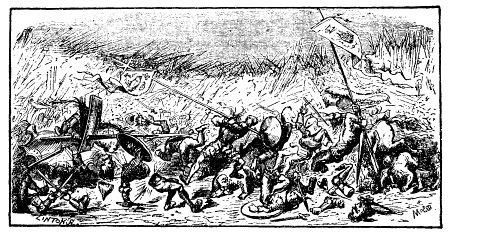

Nhưng bây giờ tôi chẳng muốn miêu tả dài dòng, tôi dành cho một cuốn sách quan trọng hơn, có thể sắp sửa đem in. Bạn đọc sẽ thấy những trang miêu tả đầy đủ xứ sở này từ khi thành lập đến ngày nay, qua một loạt những triều vua, chuyện chiến tranh và những phong trào chính trị, luật pháp, khoa học và tôn giáo này, cây cỏ và động vật, phong tục và tập quán của nhân dân, cùng với rất nhiều vấn đề lạ lùng và hữu ích khác. Bây giờ, mục đích duy nhất của tôi là kể cho bạn đọc những sự kiện công và tư đã xảy ra trong thời gian chín tháng tôi trú ngụ ở đất nước này.

Một buổi sáng, độ nửa tháng sau khi tôi được tự do. Reldresal, tổng trưởng Bộ việc riêng tư (theo như họ gọi), chỉ có một người theo hầu, đến nhà tôi ông ra lệnh cho xe ngựa đợi ông cách khá xa, và xin tôi cho ông nói chuyện một giờ. Tôi vội vàng ưng thuận, bởi vì ông là người quyền cao chức trọng lại có đức hạnh, và cũng bởi vì ông đã giúp đỡ tôi nhiều khi tôi gửi những bản thỉnh nguyện lên triều đình. Tôi đề nghị cho tôi được nằm xuống để ông nói gần tai tôi, nhưng ông muốn tôi cầm ông trên tay trong khi hai người chuyện trò. Trước hết ông chúc mừng tôi đã được tự do, ông hài lòng vì đã góp một phần công sức vào việc này. Rồi ông cho tôi biết, nếu hoàn cảnh khác đi thì chưa chắc tôi đã được tự do sớm như hiện nay. Ông nói, mặc dù trước con mắt mắt người nước ngoài, nước chúng tôi có vẻ phồn vinh, nhưng chúng tôi phải chiến đấu chống hai tai họa, một phe phái bên trong và sự đe dọa xâm lược của một kẻ thù hùng mạnh bên ngoài. Về tai họa thứ nhất, ngài cần biết rằng, từ trên bảy mươi tuần trăng nay, hai phe phái đối địch nhau, một là phái Tramecksan và một là phái Slamecksan, tức là phái "gót giầy cao" và "gót giầy thấp". Nguời ta cho rằng phái "gót giầy cao" theo đúng hiến pháp cũ của chúng tôi nhưng mặc dù vậy, nhà vua chỉ quyết định sử dụng "gót giày thấp" nắm giữ các chức vụ như ngài đã thấy. Và đặc biệt, gót giày của đức vua thấp hơn gót giày của cả triều đình ít nhất là một drurr. Mâu thuẫn giữa hai phái sâu sắc đến mức họ không muốn ăn uống với nhau, nói chuyện với nhau. Chúng tôi cho rằng phái Tramecksan đông hơn phái chúng tôi: nhưng quyền hành thì hoàn toàn ở trong tay chúng tôi. Nhưng tôi e rằng thái tử có khuynh hướng thiên về phái "gót giày cao". Dẫu sao, rõ ràng là một gót giày của ngài cao hơn gót kia, thành thử ngài đi hơi khập khiễng.
Trong khi nội bộ có những việc xâu xé như thế, thì chúng tôi bị đảo Blefuscu đe dọa xâm lược. Đó cũng là một nước lớn, gần rộng và mạnh bằng nước của đức vua đây. Bởi vì tôi phải nói với ngài rằng, những nhà triết học của chúng tôi còn nghĩ đến sự tồn tại của các quốc gia có những người to lớn như ngài - theo lời khẳng định của ngài. Họ thiên về ý cho rằng ngài rơi từ cung trăng hoặc từ một ngôi sao nào xuống. Bởi vì, nếu quả như vậy chỉ một trăm người to như ngài, trong một thời gian ngắn, sẽ xơi sạch lương thực, thực phẩm ở vương quốc của đức vua. Vả lại, lịch sử nước chúng tôi từ hàng sáu nghìn tuần trăng nay, chỉ ghi chép hai nước lớn là Lilliput và Blefuscu. Như tôi đã thưa chuyện cùng ngài, hai cường quốc này đã chiến tranh dữ dội với nhau từ ba mươi sáu tuần trăng nay. Lý do như thế này: mọi người đều công nhận rằng, muốn ăn trứng, cách cổ xưa là đập vỡ đầu to quả trứng. Song, ông nói của đức vua hiện nay, thời còn trẻ, có một lần ăn trứng, đập trứng theo kiểu ấy, bị đứt tay. Sau việc này, vua cha ngài ban một sắc lệnh cho tất cả thần dân phải đập trứng đầu nhỏ, nếu không sẽ phải chịu trọng tội. Nhân dân lấy làm bất bình đến mức vì luật lệ đó mà xảy ta sáu vụ nổi loạn, một ông vua bị giết chết và một ông vua mất ngôi - theo các nhà sử học nước chúng tôi ghi lại. Bao giờ những cuộc xâu xé tương tàn ấy cũng do những ông vua nước Blefuscu âm mưu xúi giục. Khi cuộc nổi loạn bị dập tắt, những người thất trận lại sang trú ngụ tại nước này. Người ta tính tất cả có đến trên một vạn một nghìn người thà chết chứ không chịu đập đầu trứng nhỏ. Hàng mấy trăm quyển sách lớn đã được viết để tranh luận về vấn đề này. Nhưng sách của những người "Đầu trứng to chủ nghĩa" một thời gian dài bị cấm, và những người theo phái này không có quyền nhận chức vụ gì của nhà nước. Trong thời kỳ lộn xộn kéo dài ấy, những ông vua nước Blefuscu, qua tiếng nói của các viên đại sứ, hay trách móc và kết án chúng tôi đã gây nên một cuộc chia rẽ tôn giáo, vì chúng tôi vi phạm châm ngôn cơ bản của nhà tiên tri vĩ đại Lustrog, ghi ở chương năm mươi tư, cuốn Blundecral. Người ta cho đó là sự xuyên tạc. Câu châm ngôn ấy như sau:"Mọi tín đồ chân chính muốn đập trứng đầu nào cho tiện tùy ý". Theo ý tôi thì người ta phải để cho mọi người tùy theo lương tâm, muốn đập trứng đầu nào thuận lợi nhất cũng được. Song, những người theo "Chủ nghĩa Đầu trứng to" được vua nước Blefuscu tín nhiệm vì được phái của họ ủng hộ và khuyến khích, nên một cuộc chiến tranh đã chia rẽ hai nước từ ba mươi sáu tuần trăng này. Chúng tôi mất bốn mươi tàu chiến lớn và một số lượng tàu chiến nhỏ nhiều hơn thế, cùng ba vạn thủy thủ và lính tinh nhuệ. Người ta ước tính quân địch còn tổn thất nhiều hơn thế. Nhưng hiện nay họ xây dựng một đội hải quân hùng hậu và chuẩn bị một cuộc đổ bộ vào bờ biển nước chúng tôi. Đức vua tin ở tài năng và sức khỏe của ngài, cho tôi đến báo cáo với ngài tình hình hiện nay như thế.
Tôi đề nghị ông tổng trưởng dâng lên vua lòng kính trọng của tôi và tâu với ngài rằng tôi thiết nghĩ một người nước ngoài như tôi không có quyền tham gia những cuộc đấu tranh của các phe phái, nhưng tôi sẵn sàng hy sinh để bảo vệ ngài và xứ sở của ngài, chống lại bất cứ kẻ xâm lăng nào.